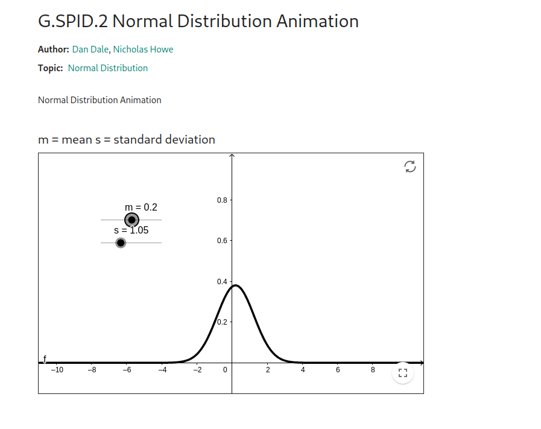
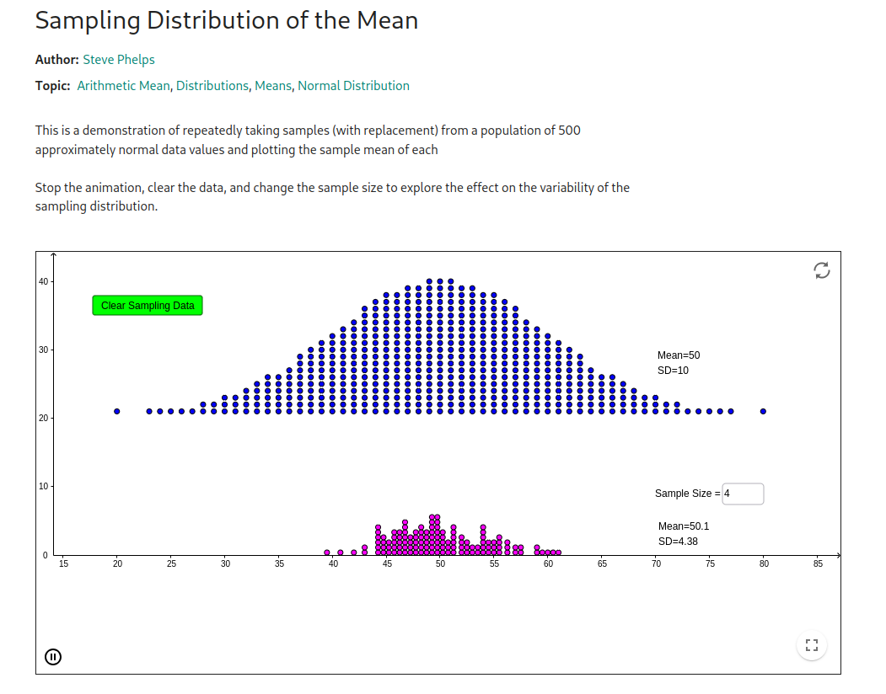

ECO 204 - Statistics for Business and Economics II
Course Webpage, Fall 2023
*The credit for the image goes to unicef.org. Click here to see the actual page.*
Only 64 percent of children go on to complete secondary education. Don’t you think this is worrying? We have 58 million children, who represent 34 percent of the population, so surely they will be the future workforce. The question is, are we going in the right direction?
Economists often think about these problems, try to find useful numbers or statistics (like 64 percent in this example), analyze these numbers, and finally try to solve these problems at the policy level. So, numbers are important, and statistics are important!
1. Course Information
- Semester: Fall 2023
- Instructor: Shaikh Tanvir Hossain
- Email: tanvir.hossain@ewubd.edu
- Class Schedule:
- Tuesday: 1:30 - 3:00 PM (Room 530, C. Lab)
- Thursday: 1:30 - 3:00 PM (Room 338)
- Outline in PDF - click here
- Office Hours
- Tuesday: 12:00 - 1:30 PM (Room 345), Please try to come during this time!
- Ed Discussion Group: Please check your email and join the Ed group of thic course!
2. Course Description
This is a continuation of the course ECO104. The students will be introduced to Inferential Statistics, and the core topics are,
- Point and Interval Estimation,
- Hypothesis Testing,
- Simple and Multiple Linear Regression Model,
- Basic Time Series Analysis,
- Goodness of fit test and some Non-Parametric tests (e.g., sign test and rank test), if time permits!,
- Analysis of Variance Techniques.
The course follows a balanced approach between theory and practice. Students will learn the concepts and also apply them using R. There will be a lab project to evaluate the applied skills.
3. Prerequisite Courses
- ECO101 and ECO104 offered at the East West University.
4. Textbooks / Notes
There will be lecture notes (typed), and you should definitely read that first. In addition, I recommend to use any of the following books for exercises and practice problems:
- Anderson, Sweeney, Williams, Camm, Cochran, Fry and Ohlmann (2020)
- Newbold, Carlson and Thorne (2020)
Following books are a bit advanced at this level, but nevertheless these are also excellent references. In particular, if you are an Economics student, you should look into Wooldridge (2019).
- DeGroot and Schervish (2012)
- Casella and Berger (2002)
- Wooldridge (2019)
5. Marks Distribution
- Problem Sets: 5%
- Quizzes: 15%
- Lab Project: 10%
- Midterm 1: 20%
- Midterm 2: 20%
- Final Exam: 30%
6. Additional Details:
- Problem Sets: Usually there will be a problem set every two weeks, and it has to be turned in with your attempted solutions by the following week. Please form groups of a maximum of 3 and submit in groups. DO the problem set seriously!
- Quizzes: In total there will be 6 random quizzes (i.e., they can happen any day during the whole semester!) I will take the average of the best 3.
- Lab Project: Lastly, there will be a Lab Project. We will talk about the details later in class.
7. Expectations
Please try to be punctual in class. Regular attendance is important. If your attendance is less than 75%, you won’t be allowed to sit for the final. You are expected to maintain Academic Honesty, which means you should perform all academic activities without any form of cheating, lying, stealing, plagiarism, receiving unauthorized assistance, or using any source of information that is prohibited.
8. Lecture Slides, R Codes and Data
Chapter 1 (Estimation)
Last updated: 29th Oct
| PDF Files | R Codes | Excel Files | Zipped Folders |
|---|---|---|---|
| 01_estimation.pdf 01_estimation_4p_layout.pdf | - | - | - |
Chapter 2 (Testing)
Last updated: 29th Oct
| PDF Files | R Codes | Excel Files | Zipped Folders |
|---|---|---|---|
| 02_testing.pdf 02_testing_4p_layout.pdf | - | - | - |
Chapter 3 (SLR)
Last updated: 26th Nov
| PDF Files | R Codes | Excel Files | Zipped Folders |
|---|---|---|---|
| 03_regression_slr.pdf 03_regression_slr_4p.pdf | advdata_codes.R, slr_lab.R, slr_lab.html | Armand’s_Work.xlsx Boston.xlsx | slr_lab_zipped.zip advertising.zip |
Chapter 4 (MLR)
Last updated: 6th Dec
| PDF Files | R Codes | Excel Files | Zipped Folders |
|---|---|---|---|
| 04_regression_mlr.pdf | advdata_codes_mlr.Rmd advdata_codes_mlr.html | Advertising.xlsx | advdata.zip |
Chapter 5 (Two Sample Testing and ANOVA)
Last updated: 16th Dec
| PDF Files | R Codes | Excel Files | Zipped Folders |
|---|---|---|---|
| 05_anova.pdf | anova_lab.R anova_lab.Rmd anova_lab.html | two_way_anova.xlsx, one_way_anova.xlsx service_data_1.xlsx service_data_2.xlsx | anova_lab.zip |
Chapter 6 (Time Series Analysis)
| PDF Files | R Codes | Excel Files | Zipped Folders |
|---|---|---|---|
| No slides | ts_lab.r ts_lab.Rmd ts_lab.html | Ch6_TSA_withExcel-1_Fall2023.xlsx, Ch6_TSA_withExcel-2_Fall2023.xlsx Bicycle.xlsx Cholesterol.xlsx Gasoline GasolineRevised.xlsx SmartphoneSales.xlsx Umbrella.xlsx | ts_lab_R.zip |
9. Using R and R studio


How to Install R and Rstudio
To use R in R studio, first you need to install R and then R studio
-
Download R using this link https://cran.r-project.org/bin/windows/base/R-4.3.2-win.exe
-
Download Rstudio using this link https://download1.rstudio.org/electron/windows/RStudio-2023.09.0-463.exe
Careful! first you have to install R and then Rstudio, DO NOT install Rstudio fIrst and then R.
Regarding R and Introductory Video, code files, data
We will use R a lot in this course. Because I believe Statistics is something where the computer plays a very important role and this is especially true now than in older times. So please start yourself comfortable using R. I promise you that I will try my best to help you out if you get stuck, so please try! You can ask me always questions about using R, so please do ask! Here are some resources
-
Video to start with R: This is a lecture from a course offered at Stanford from two legends, Trevor Hastie and Rob Tibshirani. click here to see the video
-
R code file for the video: Ch2-statlearn-lab_videocode.R
-
Data Set: You might need this data file Auto.csv. Put this CSV file in a folder and then load the data how we loaded in the class, after that, you can continue to follow the commands in the video
Again! please ask me questions if you get stuck.
10. Problem Sets and Solutions
Problem Set 1 (PS-1)
Due on 26th October 2023, 11:30 AM
| Files | Solutions | Additional Codes |
|---|---|---|
| PS_1.pdf | PS_1_solutions_8_1.R PS_1_solutions_8_2.R | QA_Session_code.R |
Problem Set 2 (PS-2)
No need to submit, but please try to solve
| Files | Solutions |
|---|---|
| PS_2.pdf | PS_2_partial_solutions_9_3.R PS_2_partial_solutions_9_4.R Problems_9_3_9-10-11.R |
Problem Set 3 (PS-3)
Due 3rd December (10:00 PM). This is an individual assignment.
| Files | Solutions |
|---|---|
| PS_3.pdf Auto.xlsx | solved this in class |
Problem Set 4 (PS-4)
Due 15th December (10:00 PM). This is also an individual assignment.
| Files | Solutions |
|---|---|
| PS_4.pdf Auto_clean.xlsx Auto.xlsx Showtime.xlsx zipped_folder | PS-4_Soln.R PS-4_Soln.Rmd PS-4_Soln.html PS-4_Soln.zip |
Problems from Time Series, Two Sample Testing, and ANOVA
Time Series:
In this chapter we will try to cover everything from Chapter 17 of Anderso’s book. ideally you should be able to solve any problem From, 17.1, 17.2, 17.3, 17.4 and 17.5
Anova:
Here also you should be able to solve all problems from Chapter 10 of Anderson’s book. In particular try to solve 10.1, 10.2, and 10.3 (these are two sample t-tests), and also problems from 13.1, 13.2, and 13.4.
11. Lab Project
There will be a Group Project
At the end of the semester there will be a group lab project. The idea is to apply whatever you have learned in this course with a data set. So please form a group of 2/3 people. I will give the topics as soon as I can
How to submit the lab project paper: There are two options for you, either use MS-Word or use LaTeX.
For MS Word Users
This is easier but generally MSWord is a very painful software when it comes to consistency (sorry to say this), e.g., it breaks down arbitrarily and I dont’ like this. So when it comes to good writing or perhaps long writing, I would prefer LaTeX. However for this course it’s no problem if you use MS-Word. But you should carefully handle the formatting. Please watch the video that I recorded and the template
- Video: I recorded a video before for typing the project in MSWord, please watch this and submit the project following these guidelines. The video is available in the playlist, but here is also the link
- Video link https://youtu.be/M1pKWGRTrjw
- Template: Please submit the PDF file such that its formatting is similar to the template (details in the video)
- Word file:
- PDF output file:
For TeX Users
You can use LaTeX. Definitely this needs more effort if this is your firs time, but at the same time if you want to pick up this skill while doing this project, please try this. I will try my level best to support you.
- Videos: I recorded two very short videos for LaTeX
- Video link 1: https://youtu.be/aICtwTIlyWQ (Open Account in Overleaf)
- Video link 2: https://youtu.be/dTMOiw55UAU (How to use the Template)
- Template Zipped Folder
- R Files that I used in the video (but you need to use your own R file)
- Sample PDF Output
{kind=link}
12. Additional Resources
I share some additional (completely optional materials).
Other Course Materials
-
Here are some nice materials from Professor John Levendis at Loyola University of New Orleans.
-He took a course on Business Statistics and recorded his lectures. Check the complete playlist
-Some of the contents of ECO 204 are very similar to the second part of this course. Also, the first part of this course covers similar materials to ECO104. So this might be very useful for you.
- One important thing if you see his lectures (it’s completely optional for you), the notations could be slightly different. For example when a random variable \(X\) follows normal distribution with mean \(\mu\) and variance \(\sigma^2\), I will write \(X \sim \mathcal{N}(\mu, \sigma^2)\), however Professor Lavendis wrote \(X \sim \mathcal{N}(\mu, \sigma)\). The writings are just different, but the underlying objects are the same. I am using \(X \sim \mathcal{N}(\mu, \sigma^2)\), because I think this is more standard! …Again this is just a notational difference.
Some animations
-Sometimes Animations (which is done using something called “simulations” in Statistics) help a lot to understand. Here are some
- Animations of Normal Distributions, click here

- Animations of sampling distributions of means when data is coming from iid normal. Let \(X_1, X_2, X_3, \ldots, X_n\) are all Normally distributed. We know from theory that the sampling distribution of the sample means will also be normal, click on this link to have a nice computer simulation using Geogebra.
